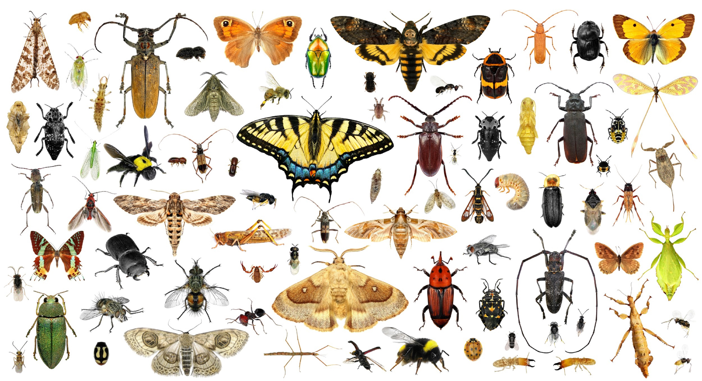

Os Artrópodes
No reino animália, o filo arthropoda é o maior em questão de números de animais representantes. Dentro da cadeia evolutiva, esse filo desenvolveu uma estrutura diferenciada para locomoção, o desenvolvimento de membros articulados capazes de dar mais velocidade de locomoção em ambiente terrestre.
Do grego arthros significa articulação e podos são pés; o filo e facilmente identificado devido seu número de seres abundante no planeta. Por uma estrutura de membros comandados por nervos, esses seres tornam-se mais desenvolvidos de que outros filos.
Apesar dessa característica marcante, possui outros fatores para classificação desses seres. São todos invertebrados. Porém eles possuem uma espécie de esqueleto, que ao contrário dos vertebrados, que têm um sistema de sustentação interna, os artrópodes possuem um externo chamado de exoesqueleto.
São animais celomados e de corpo segmentado. São dioicos pois possuem apenas um sexo definitivo.
Todos se reproduzem sexuadamente, mas seu desenvolvimento pode ser direto ou indireto a qual possui fase larval. No seu desenvolvimento embrionário o blastóporo origina primeiro a boca sendo assim protostômios.
Os artrópodes são separados em cinco classes dependendo seu número de pernas, são elas insetos, aracnídeos, crustáceos, diplópodes e quilópodes.
No reino animália, o filo arthropoda é o maior em questão de números de animais representantes. Dentro da cadeia evolutiva, esse filo desenvolveu uma estrutura diferenciada para locomoção, o desenvolvimento de membros articulados capazes de dar mais velocidade de locomoção em ambiente terrestre.A anatomia e fisiologia dos artrópodes possui um exoesqueleto feito de quitina, um polissacarídeo insolúvel. Ele tem a função de sustentação, por ser rígido garante a proteção contra pancadas. Ele é impermeável a umidade, e possui micro poros que possibilita a troca gasosa.
Os artrópode podem ser segmentados em partes como no caso do caranguejo abdome e cefalotórax, a qual a cabeça é unida ao tórax, e no caso dos insetos cabeça, tórax e abdome.
Esses animais têm um sistema digestório completo, com partes distintas e glândulas assessoras que realizam uma digestão extracelular ou seja fora das células.
O sistema circulatório dos artrópodes é do tipo aberto. O sangue circula sob baixa pressão, lentamente, passando por cavidades denominadas hemoceles. Difere dos vertebrados por possuírem um sangue de baixa celularidade, chamado de hemolinfa.
Nos artrópodes onde a distribuição de gases provenientes da respiração se dá pela circulação, o sangue contém o pigmento respiratório conhecido como hemocianina que é semelhante à hemoglobina dos vertebrados e anelídeos.
O sistema respiratório dos artrópodes é diferenciado pela classe sendo eles por traqueias, brânquias, pulmões foliáceos ou superfície do corpo.
Os artrópodes possuem um sistema nervoso responsável pela movimentação e um sistema sensorial com quimiorreceptores, nas antenas ou patas, com função tátil e percepção do ambiente. Os insetos e crustáceos tem olhos compostos. Também possuem um sistema excretor.